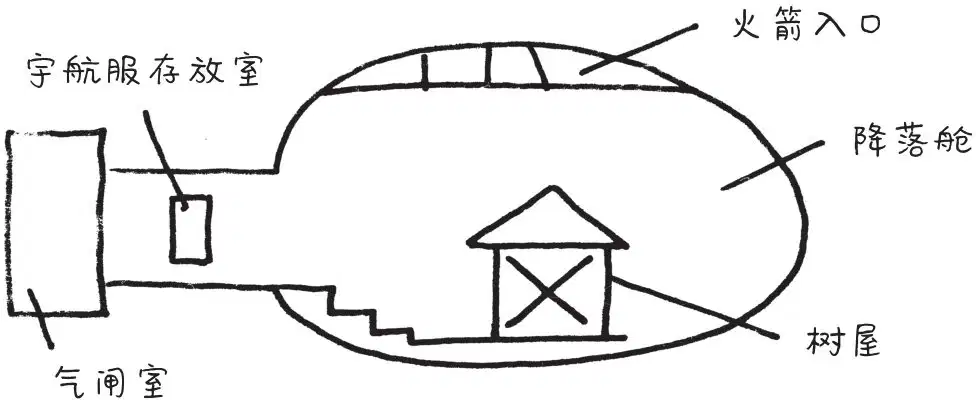

杰克睁开眼睛。
他朝窗外看去。树屋落在了一个很大的白房间里。
“这是什么训练基地呀？”安妮问道。
“不知道。”杰克回答。
房间是圆形的，没有窗户。纯白色的地板，弧形墙壁上亮着一盏盏耀眼的灯。
“有人吗？”安妮大声喊道。
没有人回答。
“那些宇航员和太空科学家都上哪儿去了？”杰克有些纳闷儿。
“这里一个人也没有。”安妮说。
“你怎么知道？”杰克疑惑地问。
“我能感觉到。”安妮说。
“我们最好弄清楚这是什么地方。”杰克说。
他翻开月球那本书，把图片下面的文字读了出来：
月球基地是2031年在月球上建造的。圆形建筑的
顶部可以滑动打开，让宇宙飞船进入和离开。
“哦，天哪！”杰克轻声惊叫。
“怎么啦？”安妮问道。
杰克的心兴奋地狂跳着，他差点儿连话都说不出来了。“我们降落在了一个月球基地里面。”
“月球基地在哪儿？”安妮不解地问。
“月球基地在月球上啊！”杰克说。
安妮吃惊地睁大了眼睛。“我们是在月球上？”她不敢相信地问。
杰克点了点头说：“书上说，月球基地是在2031年建造的，而这本书是在那之后写的！也就是说，这是一本未来的书！”
“哦，天哪！”安妮激动地说，“仙女摩根肯定是穿越到了未来，把这本书从一家未来图书馆里借出来的。”
“没错，”杰克说，“这会儿我们是在未来，是在月球上。”
“吱吱，吱吱！”
安妮和杰克看看小老鼠。它正绕着圈儿奔跑。
“可怜的花生米。”安妮说。
她想把小老鼠捧起来，可是它却躲到了放在字母M上的杧果后面。
“它可能在这儿感到紧张了。”安妮猜测。
“感到紧张的不只是它。”杰克说。他长长地舒了口气，把眼镜往上推了推。
“那么，月球基地到底是什么呢？”安妮好奇地问。
杰克看着书，大声念道：
科学家短期访问月球时，就在月球基地吃饭、睡觉。
“一家太空旅馆！”安妮说。
“差不多吧。”杰克说完，继续念书上的内容：
月球基地有一个降落舱，还有一个存放宇航服的房间。
空气和气温控制装置能让人呼吸自如。
“怪不得我们能呼吸呢。”杰克恍然大悟。
“我们到处看看吧。”安妮说，“必须为仙女摩根找到第四样东西。”
“不，我们应该先研究一下这张平面图。”杰克说着掏出了他的笔记本。
“你自己研究吧。”安妮说。
杰克把平面图抄在本子上，然后把树屋画了进去。

“好了，”他指着画在草图上的×说，“我们在这儿。”
杰克一抬头，安妮不见了。
“哦，见鬼。”杰克气恼地说。安妮像平常一样，撇下他独自走了。他们还没来得及制订计划呢。
杰克把月球书和铅笔放进背包，然后拿起笔记本和背包，朝窗口走去。
“吱吱！吱吱！”
杰克回过头看看小老鼠。它正在字母M上跑来跑去。
“待在这儿，保护好自己。”杰克说，“我们一会儿就回来。”
杰克翻身跳出窗口，双脚踏在了降落舱的地面上。
“安妮！”他大声喊道。
没有回音。
杰克看了看他画的草图。
上面显示只有一条路可走。杰克顺着弧形的白色墙壁，朝楼梯走去。
他来到楼梯上面的走廊。
“杰克——快点儿！”安妮站在走廊尽头的气闸室里，正透过一扇大门的窗户往外看。
杰克匆匆朝她跑去。安妮闪到一边，让杰克也能看到窗外。
“哦，天哪。”杰克说。眼前的情景让他激动得说不出话来。
他看到一片岩石散落的灰色大地。地面上有许多巨大的火山口和高高的山脉，虽然太阳明晃晃地照着，可是天空一片漆黑！
“向月球问声好吧。”安妮轻声说道。